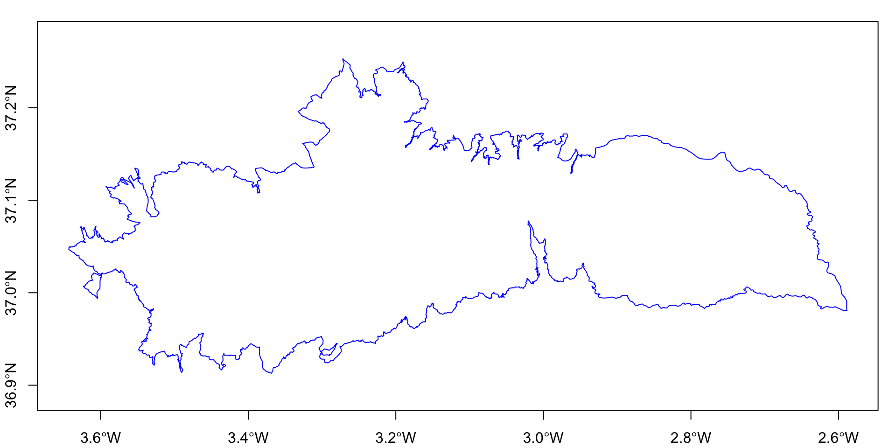

por <- pib |> dplyr::filter(ID =="Portugal")sf::st_perimeter(por) |>set_units("km")
1891.562 [km]
Métricas: Distancia
Ejemplo: Tenemos una parcela en un pinar de repoblación, en la que estamos evaluando la cantidad de semillas de Quercíneas que pueden llegar dispersadas por el arrendajo. Si tenemos una matrix de paisaje conformada por diferentes manchas de encinar y robledal, y suponiendo que las diferentes manchas de bosque de quercíneas tienen la misma cantidad de propágulos y la misma probabilidad de ser visitadas por los arrendajos, ¿Quien tiene mas probabilidad de colonizar el pinar de repoblación?

pinar_geom <- manchas |>filter(tipo =="Pinar") |>st_geometry()# Calcular la distancia desde encinares y robledales al pinardistancias <- manchas |>filter(tipo %in%c("Encinar", "Robledal")) |>mutate(distancia_pinar =st_distance(geometry, pinar_geom))# Mostrar la tabla con las distanciasdistancias |>st_drop_geometry() |>print()
nombre tipo colores distancia_pinar
1 Encinar A Encinar darkgreen 171639.7 [m]
2 Encinar B Encinar darkgreen 101197.6 [m]
3 Robledal A Robledal gold 158715.4 [m]
4 Robledal B Robledal gold 142413.1 [m]
Operaciones básicas con raster
Recursos
Royé, D & Serrano, R (2019). Introducción a los SIG con R. Universidad de Zaragoza.
Ayuda JDC2022-050056-I financiada por MCIN/AEI /10.13039/501100011033 y por la Unión Europea NextGenerationEU/PRTR
Si usas esta presentación puedes citarla como:
Pérez-Luque, A.J. (2025). Introducción a los SIG con R. Material Docente de la Asignatura: Ciclo de Gestión de los Datos. Master Universitario en Conservación, Gestión y Restauración de la Biodiversidad. Universidad de Granada. https://ecoinfugr.github.io/ecoinformatica/

![]()